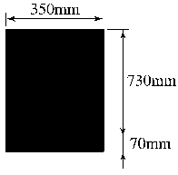
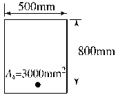
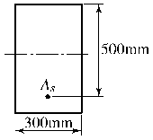

콘크리트산업기사 (2005-08-07 기출문제)
1과목: 콘크리트재료 및 배합
1. 내화구조물의 콘크리트용 골재로써 가장 부적당한 것은?
- 현무암
- 안산암
- 경질응회암
- 화강암
(정답률: 알수없음)

2. 콘크리트의 응결에 관한 다음의 일반적인 설명 중 적당하지 않은 것은?
- 촉진제를 사용하면 응결이 빨라진다.
- 콘크리트 온도가 낮을수록 응결이 지연되는 경향이 있다.
- 슬럼프가 작을수록 응결이 지연되는 경향이 있다.
- 물-결합재비가 클수록 응결이 지연되는 경향이 있다.
(정답률: 알수없음)
3. 단위수량 162㎏/m3, 물-시멘트비 55%, 슬럼프 8㎝, 공기량 5% 및 잔골재율 45%의 조건으로 콘크리트의 배합설계를 실시할 때 단위시멘트량 및 단위굵은골재량은 얼마인가?(단, 시멘트의 밀도:3.14g/cm3, 잔골재의 표면건조 포화상태의 밀도: 2.64g/cm3, 굵은골재의 표면건조 포화상태의 밀도: 2.66g/cm3)
- 시멘트: 295, 굵은골재(단위량㎏/cm3): 1,015
- 시멘트: 295, 굵은골재(단위량㎏/cm3): 824
- 시멘트: 3⑤, 굵은골재(단위량㎏/cm3): 1,015
- 시멘트: 3⑤, 굵은골재(단위량㎏/cm3): 824
(정답률: 알수없음)
4. 시멘트 비중시험에 관한 설명 중 올바른 것은?
- 광유를 넣은 후 눈금은 볼록한 면의 값을 읽는다.
- 실험이 끝난 후 비중병은 물로 깨끗이 청소한다.
- 광유는 완전 탈수시킨 것을 사용한다.
- 시멘트 비중은 마노메타관을 이용하여 측정한다.
(정답률: 알수없음)
5. 일반적인 시멘트의 강도에 대한 다음 설명 중 적절하지 않은 것은?
- 시멘트 페이스트의 강도를 말한다.
- 시멘트의 조성에 영향을 받는다.
- 물-재결합비에 따란 변한다.
- 재령 및 양생조건에 따라 영향을 받는다.
(정답률: 알수없음)
6. 골재의 성질이 콘크리트에 미치는 영향에 대한 설명 중 틀린 것은?
- 콘크리트용 부순자갈 및 부순모래 시험결과 실적률이 큰 골재를 사용하면 콘크리트의 단위수량을 감소시킬 수 있다.
- 황산나트륨에 의한 골재 안정성시험결과 손실질량백분율이 작은 골재를 사용하면 콘크리트의 내열성이 향상된다.
- 잔골재의 유기불순물 시험결과 표준용액과 비교하여 색이 짙어진 골재는 콘크리트의 응결 및 경화를 저해할 우려가 있다.
- 골재중에 함유된 점토덩어리를 측정한 시험결과 점토덩어리량이 큰 골재는 콘크리트의 강도 및 내구성을 저하시킨다.
(정답률: 78%)
7. 다음의 시멘트 클링커의 주요화합물 중에서 일반적으로 수화열이 가장 낮은 것은?
- 3CaOㆍAl2O3
- 2CaOㆍSiO2
- 3CaOㆍSiO2
- 4CaOㆍAl2O3ㆍFe2O3
(정답률: 알수없음)
8. 공기연행제에 대한 일반적인 설명으로 옳은 것은?
- 공기연행제를 사용한 콘크리트에서 물-결합재비가 일정한 경우 공기량이 증가하면 슬럼프는 커지는 경향이 있다.
- 공기연행제를 사용한 콘크리트에서 물-결합재비가 일정한 경우 공기량이 증가하면 압축강도는 증가하는 경향이 있다.
- 공기연행제의 대표적인 종류로는 시메졸, 리그널 등이 있으며, 시메졸과 리그널은 알칸술폰산의 염화물이다.
- 공기연행제를 사용할 경우 기포가 시멘트 및 골재의 미립자를 떠오르게 하거나 물의 이동을 도움으로써 블리딩이 많아진다.
(정답률: 알수없음)
9. 콘크리트 배합시 물-결합재비에 관한 설명 중 옳지 않은 것은?
- 물-결합재비는 소요의 강도, 내구성, 수밀성 및 균열저항성 등을 고려하여 정한다.
- 제빙화학제가 사용되는 콘크리트의 물-결합재비는 45% 이하로 하여야 한다.
- 콘크리트의 수밀성을 기준으로 물-결합재미를 정할 경우, 그 값은 50% 이하로 하여야 한다.
- 콘크리트의 탄산화 저항성을 고려해야 하는 경우 물-결합재비는 45&% 이하로 하여야 한다.
(정답률: 알수없음)
10. 시멘트의 분말도에 관한 설명 중 옳은 것은?
- 분말도가 작은 것일수록 물과 혼합시 접촉 표면적이 커서 수화작용이 빠르다.
- 분말도가 작은 것일수록 블리딩이 적고 워커블한 콘크리트가 얻어진다.
- 분말도가 높을수록 초기강도는 작으나 장기강도가 크게 된다.
- 분말도가 높을수록 풍화되기 쉽고 건조수축이 커져서 균열이 발생하기 쉽다.
(정답률: 알수없음)
11. 골재의 체가름 시험에 관한 설명 중 올바른 것은?
- 골재의 평균 입경이 클수록 조립률은 커진다.
- 골재채취량은 골재 크기와 관계없이 동일하게 하여 실험한다.
- 시료는 4등분을 나누어 각 부분에서 고르게 채취하여 사용한다.
- 시료의 무게는 표면건조포화상태에서 측정한다.
(정답률: 알수없음)
12. 다음 중 골재에 관련된 일반적인 시험이 아닌 것은?
- 체가름시험
- 밀도 및 흡수율시험
- 압축강도시험
- 안정성시험
(정답률: 알수없음)
13. 콘크리트 재료 및 배합에 관한 다음 설명 중에서 옳지 않은 것은?
- 굵은골재는 5㎜ 체에 남는 골재를 말한다.
- 콘크리트의 배합은 질량으로 표시하는 것을 원칙으로 한다.
- 콘크리트의 배합강도는 현장콘크리트의 품질변동을 고려하여 결정한다.
- 플라이 애시를 사용하는 배합을 표시할 때 물-시멘트비와 물-플라이 애시비를 각각 표시한다.
(정답률: 알수없음)
14. 골재의 입형에 대한 설명 중 옳지 않은 것은?
- 실적률이 작으면 시멘트 페이스트량이 증가되어 비경제적인 콘크리트가 된다.
- 골재의 입형이 나쁘면 작업성을 좋게 하기 위하여 단위 수량 및 시멘트량이 증가된다.
- 골재의 실적률이 증가하면 콘크리트의 유동성도 증가한다.
- 부순자갈은 입형이 나쁘기 때문에 콘크리트 강도면에서 불리하다.
(정답률: 알수없음)
15. 재령 28일 모르타르 공시체(5×5×5㎝)에 50kN의 하중이 재하할 때 공시체가 파괴되었다면 이 모르타르의 압축강도는 얼마인가?
- 20N/mm2
- 30N/mm2
- 40N/mm2
- 50N/mm2
(정답률: 알수없음)
16. 콘크리트의 슬럼프 시험에서의 다짐의 층수와 횟수는?
- 2층 20회
- 2층 25회
- 3층 20회
- 3층 25회
(정답률: 알수없음)
17. 콘크리트에 사용되는 혼화제에 관하여 옳지 않은 것은?
- 공기연행제는 동결융해에 대한 저항성을 향상시킨다.
- 유동화제는 분산효과가 크고 슬럼프 변화가 적은 특성이 있다.
- 고성능 공기연행 감수제는 공기연행 작용 및 시멘트 분산작용을 대폭적으로 증대시켜 우수한 유동성과 슬럼프 유지 능력을 가진 혼화제이다.
- 수축저감제는 모세관수의 표면장력을 저하시켜 건조수축을 저감하는 특성이 있다.
(정답률: 알수없음)
18. 배합강도를 결정할 때 콘크리트 압축강도의 표준편차는 실제 사용한 콘크리트의 30회 이상의 시험실적으로부터 결정하는 것을 원칙으로 하나, 시험횟수가 30회 미만인 경우 그 시험으로부터 구한 표준편차와 표준편차의 보정계수를 곱한 값을 표준편차로 사용한다. 다음의 시험횟수에 대한 표준편차의 보정계수가 옳지 않은 것은?
- 시험횟수 : 30회 이상 -표준편차의 보정계수 : 1.00
- 시험횟수 : 25회 - 표준편차의 보정계수 : 1.03
- 시험횟수 : 20회 - 표준편차의 보정계수 : 1.10
- 시험횟수 : 15회 - 표준편차의 보정계수 : 1.16
(정답률: 알수없음)
19. 콘크리트 압축강도 시험에서 10개 공시체를 측정하여 평균값이 24.0MPa, 표준편차가 3.6MPa일 때의 변동계수는?
- 5%
- 8%
- 10%
- 15%
(정답률: 알수없음)
20. KSL5201에 규정된 포틀랜드 시멘트의 종류가 아인 것은?
- 보통 포틀랜드 시멘트
- 조강 포틀랜드 시멘트
- 알루미나 시멘트
- 내황산염 포틀랜드 시멘트
(정답률: 알수없음)
2과목: 콘크리트제조, 시험 및 품질관리
21. 포틀랜드 시멘트의 휨강도 시험방법에서 공시체가 지간의 3등분 중앙부에 파괴되었을 때의 휨강도를 구하는 식은? (여기서, Ｐ:파괴하중, Ｌ:지간, b:파괴단면의 폭, h: 파괴단면의 높이)
- PL/(bh2)
- PL/(b2h)
- 2PL/(bh)
- 2PL/(bh2)
(정답률: 알수없음)
22. 지름 150㎜, 높이 300㎜인 원주형 공시체의 인장강도를 측정하기 위해 쪼갬인장강도 시험으로 콘크리트에 하중을 가하여 공시체가 100kN에 파괴되었다면 이 때 콘크리트의 인장강도는?
- 1.2MPa
- 1.3MPa
- 1.4MPa
- 1.6MPa
(정답률: 알수없음)
23. 공기연행 콘크리트에 관한 서술로 바르지 않은 것은?
- 일반 콘크리트에 비해 배합시 유동성이 향상된다.
- 동결융해에 대한 내구성이 상대적으로 커진다.
- 철근과의 부착강도는 작아야 한다.
- 같은 물-결합재비로 배합시 일반 콘크리트보다 강도가 커진다.
(정답률: 알수없음)
24. 레디믹스트 콘크리트 공장에서 시방배합을 현장배합으로 수정할 때 고려해야 하는 보정은?
- 입도 보정 및 표면수 보정
- 잔골재율 보정 및 입도 보정
- 물-결합재비 보정 및 표면수 보정
- 잔골재율 보정 및 물-결합재비 보정
(정답률: 알수없음)
25. 콘크리트의 슬럼프 시험에서 몰드에 대한 콘크리트를 3층으로 채우고 각각 다진 후 슬럼프콘을 들어 올리는데, 이때 들어올리는 시간의 표준은 다음 중 어느 것인가?
- 2~3초
- 4~5초
- 6~7초
- 8~9초
(정답률: 알수없음)
26. 관입저항침에 의한 콘크리트의 응결시간 측정시 초결시간으로 정의하는 관입저항값은 얼마인가?
- 2.5MPa
- 2.8MPa
- 3.0MPa
- 3.5MPa
(정답률: 알수없음)
27. 일반적으로 콘크리트에 시용되는 골재의 필요한 성질에 대한 설명 중 잘못된 것은?
- 열이나 기온의 변화에 따라서 체적이 변하거나 변형되지 않을 것.
- 시멘트와 수화반응에 유해한 물질(유기불순물, 염류 등)이 포함되지 않을 것.
- 마모에 대한 저항성을 가질 것.
- 골재의 입형이 모난 것이 많이 포함된 골재일 것.
(정답률: 45%)
28. 통계적 품질관리 방법이 아닌 것은?
- 관리도법
- 발취검사법
- 표본조사
- 현장검사
(정답률: 알수없음)
29. 초기재령 콘크리트에 발생하기 쉬운 균열의 원인이 아닌 것은?
- 소성수축
- 황산염반응
- 수화열
- 침하수축
(정답률: 알수없음)
30. 단위시멘트량이 300㎏/m3, 단위수량이 180㎏/m3이고 플라이 애시를 100㎏/m3 사용하였다면 물-결합재비는 얼마인가?
- 40%
- 45%
- 50%
- 60%
(정답률: 37%)
31. 블리딩(bleeding)을 저감시키는 요인이 아닌 것은?
- 물-결합재비가 클 때
- 응결시간이 빠를 시멘트를 사용할 때
- 분말도가 미세한 시멘트를 사용할 때
- AE제, 감수제를 사용할 때
(정답률: 알수없음)
32. 일반적으로 콘크리트는 강알칼리성 재료로써 철근의 부식을 억제하는데, 콘크리트의 알칼리 정도의 범위로 알맞은 것은?
- pH 12~13
- pH 10~11
- pH 14~15
- pH 9~10
(정답률: 알수없음)
33. 레디믹스트 콘크리트의 품질검사에 관한 다음 기술 중 레디믹스트 콘크리트의 규정상 적당한 것은 어떤 것인가?
- 압축강도의 시험용 시료의 채취를 공사 배출지점에서 할 수 없었으므로 공장 출하 때에 실시했다.
- 염화물 함유량시험을 공사 배출지점에서 할 수 없어서 공장 출하 때에 실시했다.
- 공기량 시험을 공사 배출지점에서 할 수 없어서 공장 출하 때에 실시했다.
- 슬럼프 시험을 공사 배출지점에서 할 수 없어서 공장 출하 때에 실시했다.
(정답률: 알수없음)
34. 콘크리트의 워커빌리티에 관한 설명 중 옳지 않은 것은?
- 시멘트량이 많을수록 콘크리트는 워커블하게 된다.
- 온도가 높을수록 슬럼프는 증가되고 슬럼프 감소는 줄어든다.
- 플라이 애시를 사용하면 워커빌리티가 개선된다.
- 둥근 모양의 천연 모래가 모가진 것이나 편평한 것이 많은 부순모래에 비하여 워커블한 콘크리트를 얻기 쉽다.
(정답률: 알수없음)
35. 콘크리트의 표면상태의 검사 항목이 아닌 것은?
- 노출면의 상태
- 철근 피복두께
- 균열
- 시공이음
(정답률: 알수없음)
36. 콘크리트 응결 특성에 관계되는 요소로써 거리가 먼 것은?
- 굵은골재의 최대치수
- 시멘트의 품질
- 혼화재료의 품질
- 타설시 온도
(정답률: 알수없음)
37. 굵은골재의 최대치수, 잔골재율, 잔골재의 입도, 반죽질기 등에 따르는 마무리하기 쉬운 정도를 나타내는 굳지 않은 콘크리트의 성질을 나타내는 용어는?
- 시공연도(workability)
- 반죽질기(consistency)
- 성형성(plasticity)
- 마감성(finishability)
(정답률: 알수없음)
38. 다음 중 된비빔 콘크리트용 시험장치가 아닌 것은?
- 비비시험
- 다짐계수시험
- L플로시험
- 진동대식 컨시스턴시 시험
(정답률: 알수없음)
39. 관리도가 이루는 분포에 관한 서술로 옳지 않은 것은?
- P관리도는 이항분포에 따른다.
- C관리도는 푸아송분포에 따른다.
- x관리도는 이항분포에 따른다.
 관리도는 정규분포에 따른다.
관리도는 정규분포에 따른다.
(정답률: 알수없음)
40. 다음 중 콘크리트 내의 굵은골재의 품질관리 항목에 속하지 않은 것은?
- 절대건조밀도
- 흡수율
- 물리 화학적 안정성
- 유기불순물
(정답률: 알수없음)
3과목: 콘크리트의 시공
41. 외력에 의하여 일어나는 응력을 소정의 한도까지 상쇄할 수 있도록 미리 인공적으로 그 응력의 분포와 크기를 정하여 내력을 준 콘크리트를 무엇이라 하는가?
- 프리플레이스트 콘크리트
- 진공 콘크리트
- 프리캐스트 콘크리트
- 프리스트레스트 콘크리트
(정답률: 43%)
42. 다음은 신축이음의 구조에 대한 설명이다. 옳지 않은 것은?
- 신축이음은 양쪽 구조물을 절연시켜야 한다.
- 신축이음 부근에서는 반드시 배력철근을 보강해야 한다.
- 수밀을 요하는 경우에는 신축성 지수판을 사용한다.
- 단차의 위험이 있을 경우에는 슬립바(slip bar)를 사용한다.
(정답률: 알수없음)
43. 한중 콘크리트에 관한 다음 내용 중 잘못 기술된 것은?
- 콘크리트의 배합온도를 높이기 위하여 시멘트를 가열하는 것은 금지되어 있다.
- 타설시의 콘크리트 온도는 동결을 방지하기 위하여 0~10℃의 범위에서 정한다.
- 물-결합재비는 원칙적으로 60%이하로 하여야 한다.
- 시멘트를 투입하기 전에 믹서 안의 재료온도는 40℃를 넘지 않는 것이 좋다.
(정답률: 알수없음)
44. 다음은 고강도 콘크리트의 재료 및 제조에 대한 설명이다. 옳지 않은 것은?
- 강제식 믹서보다는 가경식 믹서의 사용이 효과적이다.
- 단위수량은 최대 180kg/m3이하로 한다.
- 물-시멘트비는 일반적으로 50% 이하로 한다.
- 굵은골재 최대치수는 가능한 25㎜ 이하로 사용하도록 한다.
(정답률: 34%)
45. 서중 콘크리트에 관한 다음의 내용 중 잘못 기술된 것은?
- 1일 평균기온이 25℃를 초과하는 경우 서중 콘크리트로써 시공한다.
- 서중 콘크리트를 타설할 때의 콘크리트의 온도는 최대 30℃ 이하라야 한다.
- 비비기로부터 타설 종료까지의 시간은 1.5시간 이내로 하여야 한다.
- 서중 콘크리트는 타설 종료 후 최소 24시간 동안 노출면이 건조하는 일이 없도록 습윤상태로 유지해야 한다.
(정답률: 알수없음)
46. 벽과 같이 높이가 높은 콘크리트를 급속하에 연속 타설하는 경우 나타나는 현상이 아닌 것은?
- 재료분리 발생
- 시공 이음 발생
- 상부 콘크리트의 품질 저하
- 수평철근의 부착강도 저하
(정답률: 알수없음)
47. 한중 콘크리트로써 시공하여야 하는 기상조건의 기준으로 가장 적합한 설명은?
- 타설온도 4℃ 이하
- 일평균기온 4℃ 이하
- 타설온도 -4℃ 이하
- 일평균기온 -4℃ 이하
(정답률: 알수없음)
48. 매스콘크리트에서의 온도균열지수의 정의를 가장 적절하게 설명한 것은?
- 콘크리트의 압축강도를 온도응력으로 나눈 값
- 콘크리트의 인장강도를 온도응력으로 나눈 값
- 온도응력을 콘크리트의 압축강도로 나눈 값
- 온도응력을 콘크리트의 인장강도로 나눈 값
(정답률: 알수없음)
49. 투수, 투습에 의해 구조물의안전성, 내구성이 영향을 받는 구조물로써 지하구조물, 수리 구조물 등 압력수가 작용하는 구조물에 사용되는 콘크리트는?
- 수중콘크리트
- 수밀콘크리트
- 유동화 콘크리트
- 팽창콘크리트
(정답률: 50%)
50. 연직시공 이음부의 거푸집 제거시기는 콘크리트 타설 후 어느 정도 경과한 시점에서 실시하는 것이 좋은가?
- 하절기 4~6시간, 동절기 10~15시간
- 하절기 7~9시간, 동절기 8~10시간
- 하절기 2~3시간, 동절기 7~10시간
- 하절기 1~2시간, 동절기 6~8시간
(정답률: 알수없음)
51. 담수 및 해수 등의 수중에서 타설하는 수중콘크리트의 시공법으로 거리가 먼 것은?
- 레미콘 직접타설 공법
- 특수 트레미 콘크리트타설 공법
- 밑열림상자 또는 밑열림포대공법
- 수중콘크리트 펌프공법
(정답률: 알수없음)
52. 굵은골재를 먼저 투입한 후 골재와 골재 사이 빈틈에 시멘트 모르타르를 주입하여 제작하는 방식의 콘크리트는 다음 중 어느 것인가?
- 진공콘크리트
- 프리플레이스트 콘크리트
- P.S콘크리트
- 수밀콘크리트
(정답률: 알수없음)
53. 콘크리트의 치기 작업에 대한 다음의 서술 중 콘크리트의 품질 확보를 위하여 바람직하지 않는 것은?
- 콘크리트를 직접 지면에 치는 경우에는 미리 깔기 콘크리트를 깔아두는 것이 좋다.
- 먼저 모르타르를 쳐서 널리 펴고 그 위에 콘크리트를 치면 곰보 방지, 시공이음 일체화의 효과가 있다.
- 콘크리트를 2층 이상으로 나누어 칠 경우, 원칙적으로 하층의 콘크리트가 굳기 시작한 후 상층의 콘크리트를 쳐야 한다.
- 친 콘크리트는 거푸집 안에서 횡방향으로 이동시켜서는 안되며, 내부진동기를 써서 유동화시키면서 콘크리트를 이동시켜서도 안된다.
(정답률: 34%)
54. 수중 콘크리트 배합에 관한 설명으로 옳지 않은 것은?
- 굵은골재로 자갈을 사용할 경우 잔골재율은 50~55%를 표준으로 한다.
- 현장타설 콘크리트말뚝 및 지하연속벽의 콘크리트는 일반적으로 슬럼프값 180~210㎜를 표준으로 한다.
- 지하연속벽에 사용하는 콘크리트의 경우 지하연속벽을 가설(仮說)만으로 이용할 경우에는 단위시멘트량은 300㎏/m3 이상으로 하는 것이 좋다.
- 재료분리를 적게 하기 위해 점성이 풍부한 배합으로 하는 것이 좋다.
(정답률: 알수없음)
55. 숏크리트 코어 공시체(ø10×10㎝)로부터 채취한 강섬유의 질량이 30.8g이었다. 강섬유 혼입률(부피기준)을 구하면? (단, 강섬유의 단위질량은 7.85g/cm3이다.)
- 5%
- 3%
- 1%
- 0.5%
(정답률: 알수없음)
56. 숏크리트에 대한 다음의 설명 중 틀린 것은?
- 숏크리트는 비교적 소규모로 운반 가능한 기계설비로 시공할 수 있고 임의방향에 대한 시공이 가능하다.
- 습식 숏크리트는 대단면으로써 장대화되는 산악터널의 급열양생 시공에 적합하다.
- 리바운드 등의 재료 손실이 많고 평활한 마무리 면을 얻기 어려우며 수밀성이 다소 결여되는 단점이 있다.
- 숏크리트는 조기에 강도를 발현시킬 수 있고 급속시공이 가능하지만 거푸집 시공이 복잡한 단점이 있다.
(정답률: 알수없음)
57. 매스 콘크리트의 온도균열제어 방법으로 옳은 것은?
- 초기 양생시 콘크리트의 온도상승이 급격히 발생하도록 한다.
- 거푸집 탈형 후 구조물의 온도를 낮추기 위해 콘크리트 표면을 급랭시킨다.
- 콘크리트 내부와 표면의 온도차가 크도록 한다.
- 콘크리트의 타설온도는 가능한 낮게 한다.
(정답률: 알수없음)
58. 고강도 콘크리트에 대한 다음의 서술 중 옳게 기술된 것은?
- 고강도 콘크리트는 설계기준강도만 높은 것이 아니라 높은 내구성을 필요로 하는 철근 콘크리트 공사에도 적용될 수 있다.
- 고강도의 콘크리트를 얻기 위해서는 소요의 워커빌리티를 얻을 수 있는 범위 내에서 단위수량은 가능한 한 크게 하여야 한다.
- 공기연행제의 적용은 고강도 콘크리트의 제조에 필수적이며 콘크리트의 강도 증진에 크게 기여한다.
- 고강도 콘크리트는 빈배합이며, 시멘트 대체재료인 플라이 애시나 실리카 퓸 등의 적용은 적절하지 않다.
(정답률: 알수없음)
59. 다음은 경량골재 콘크리트의 내동해성을 기준으로 하여 물-결합재비를 정하는 경우의 공기연행 콘크리트의 최대 물-결합재비를 나타낸 것이다. 그 값을 잘못 나타낸 것은?
- 기상작용이 심한 경우 또는 동결융해가 종종 반복되는 경우, 부재 단면이 얇고(0.2m 이하) 계속해서 물로 포화되는 경우의 물-결합재비 최대값은 45%이다.
- 기상작용이 심한 경우 또는 동결융해가 종종 반복되는 경우, 부재 단면이 보통이고 보통의 노출상태(물로 포화되는 부분이 없는 경우)에 있는 경우의 물-결합재비 최대값은 55%이다.
- 기상작용이 심하지 않은 경우 부재 단면이 보통이고 계속해서 물로 포화되는 경우의 물-결합재비 최대값은 50%이다.
- 기상작용이 심하지 않은 경우 부재 단면이 보통이고 보통의 노출상태(물로 포화되는 부분이 없는 경우)에 있는 경우의 물-결합재비 최대값은 60%이다.
(정답률: 알수없음)
60. 숏크리트 작업에서 발생하는 분진대책은 분진발생원 억제 대책과 발생된 분진대책으로 구분할 수 있다. 이 중 분진발생원의 억제대책으로 옳은 것은?
- 환기에 의한 배출ㆍ희석
- 잔골재의 표면흡수율의 관리
- 집진장치의 설치
- 양호한 작업환경의 확보
(정답률: 알수없음)
4과목: 콘크리트 구조 및 유지관리
61. 일반적으로 정사각형의 확대기초에서 전단에 대한 위험단면은?
- 기둥의 전면
- 기둥 전면에서 d만큼 떨어진 면
- 기둥의 전면에서 d/2만큼 떨어진 면
- 기둥의 전면에서 기둥 두께만큼 안쪽으로 떨어진 면
(정답률: 알수없음)
62. 콘크리트에 함유된 염화물 이온량의 측정 방법으로 맞지 않는 것은 어느 것인가?
- 염화은 침전법
- 시차열 중량분석법
- 전위차 적정법
- 크롬산은법
(정답률: 알수없음)
63. 보강의 시공 및 검사 내용 중 적합하지 않은 것은?
- 보강에 대한 시공을 할 경우에는 기존 시설물을 손상시키는 일이 없도록 세심한 주의를 기울여야 한다.
- 기존 시설물에 대한 바탕처리는 설계조건을 만족시키도록 적절히 실시하여야 한다.
- 사용할 재료는 현장의 상황에 따라 시험을 실시하지 않아도 된다.
- 보강 완료 후 설계에 정해진 조건에 부합된 시공이 되었는가의 여부를 검사하여야 한다.
(정답률: 알수없음)
64. 콘크리트 구조물의 철근 부식 상황을 파악하는데 적절하지 않은 방법은 어느 것인가?
- 자연전위법
- 분극저항법
- 자분탐상법
- 전기저항법
(정답률: 알수없음)
65. 그림과 같은 단면의 보에서 fck=21MPa일 때, 보통 중량 콘크리트가 분담하는 설계전단강도(øVc)는? (단, 강도감소계수 ф=0.8)

- 165.8kN
- 195.1kN
- 496.4kN
- 620.6kN
(정답률: 알수없음)
66. 물을 저장하는 수조 등과 같은 수밀성이 요구되는 콘크리트 구조물의 최대 허용 균열폭은 얼마인가?
- 0.6㎜
- 0.4㎜
- 0.2㎜
- 0.1㎜
(정답률: 알수없음)
67. 보의 자중이 10kN/m, 활하중 15kN/m인 등분포하중을 받는 경간 10m인 단순지지보의 계수휨모멘트는?
- 457.5kNㆍm
- 493.8kNㆍm
- 525.3kNㆍm
- 537.5kNㆍm
(정답률: 알수없음)
68. 다음 처짐에 관한 설명 중 틀린 것은?
- 구조물의 순간 및 장기처짐량은 허용처짐량 이하이어야 한다.
- 장기처짐은 시간이 지남에 따라 증가율이 증가한다.
- 하중이 재하되는 순간 발생되는 처짐을 탄성처짐이라 한다.
- 장기처짐은 주로 건조수축과 크리프에 의해 일어난다.
(정답률: 알수없음)
69. 콘크리트 구조 내부의 공동이나 균열과 같은 결함을 조사하는 방법으로 적당하지 않은 것은?
- 초음파법
- 어쿠스틱 에미션(AE)법
- 충격탄성파법
- 반발경도법
(정답률: 20%)
70. 그림과 같은 단철근 직사각형 보에서 fy=400MPa, fck=30MPa 일 때 강도설계법에 의한 등가응력의 깊이 α는?

- 49.2㎜
- 94.1㎜
- 13.8㎜
- 21.7㎜
(정답률: 알수없음)
71. 다음 중 철근의 피복두께의 역할이 아닌 것은?
- 철근 부식 방지
- 단면의 내하력 증대
- 부착강도 증진
- 내화성 증진
(정답률: 알수없음)
72. 콘크리트의 설계기준강도와 철근의 항복응력이 각각 fck=24MPa, fy=400MPa인 부재에서 인장을 받는 표준 갈고리를 둔다면 기본 정착길이로 가장 적합한 것은? (여기서, 철근의 공칭지름은 25.4㎜이다.)
- 500㎜
- 510㎜
- 520㎜
- 530㎜
(정답률: 15%)
73. 프리스트레스트(prestressed) 콘크리트에 관한 일반적 표현이 잘못된 것은?
- PS강재는 릴렉세이션(relaxation) 값이 작은 것을 사용하는 것이 바람직하다.
- 콘크리트는 크리프가 큰 것을 사용하는 것이 바람직하다.
- 포스트텐션(post-tension) 방식은 현장에서 프리스트레스를 도입하는 경우가 많다.
- 프리텐션(pre-tension) 방식은 공장에서 동일 종류의 제품을 대량으로 제조하는 경우가 많다.
(정답률: 알수없음)
74. 알칼리 골재반응이 일어나기 위해서는 일반적으로 반응의 3조건이 충족되어야 한다. 여기에 해당하지 않는 것은?
- 골재 중의 유해물질
- 대기중의 이산화탄소
- 시멘트중의 알칼리
- 반응을 촉진하는 수분
(정답률: 14%)
75. 다음 중 콘크리트 구조물의 보강 방법으로 거리가 먼 것은?
- 수지주입공법
- 강판접착공법
- 세로보 증설공법
- 탄소섬유 접착공법
(정답률: 알수없음)
76. 수동식 주입법은 주입 건(gun)이나 소형 펌프를 사용하여 주입제를 비교적 다량으로 주입할 경우 사용되는 방법이다. 이 공법의 장점으로 거리가 먼 것은?
- 다량의 수지를 단시간에 주입할 수 있다.
- 균열폭 0.2㎜ 이하의 미세한 균열부위를 주입하기가 용이하다.
- 주입압이나 속도를 조절할 수 있다.
- 벽, 바닥, 천장 등의 부위에 따른 제약이 없다.
(정답률: 알수없음)
77. 아래와 같이 보에서 계수전단력(Vu)가 фVc의 1/2을 초과하여 최소 단면적의 전단철근을 배근하려고 한다. 전단철근의 간격을 250㎜로 할 때 전단철근에 대한 최소 단면적은? (단, fck=21MPa, fy=400MPa이다.)

- 55.3mm2
- 65.7mm2
- 76.2mm2
- 82.3mm2
(정답률: 알수없음)
78. 섬유보강 접착공법에 사용하는 보강 재료로써 가장 부적합한 것은?
- 탄소섬유
- 유리섬유
- 아라미드섬유
- 폴리에스테르섬유
(정답률: 알수없음)
79. 폭 b=300mm, 유효높이 d=445mm인 직사각형 단면에 인장철근 4-D29(단면적=2570mm2)가 배치되어 있다. fck=27MPa, fy=400MPa일 때 이 단면의 설계모멘트 강도 øMn을 계산하면? (단, 휨에 대한 강도감소계수 ф=0.85)
- 285.7kNㆍm
- 304.7kNㆍm
- 3 23.7kNㆍm
- 380.9kNㆍm
(정답률: 알수없음)
80. 콘크리트 구조물의 재하 시험시 최종 잔류 측정값은 시험하중 제거 후 몇 시간 경과했을 때 읽어야 하는가?
- 1시간
- 6시간
- 12시간
- 24시간
(정답률: 알수없음)